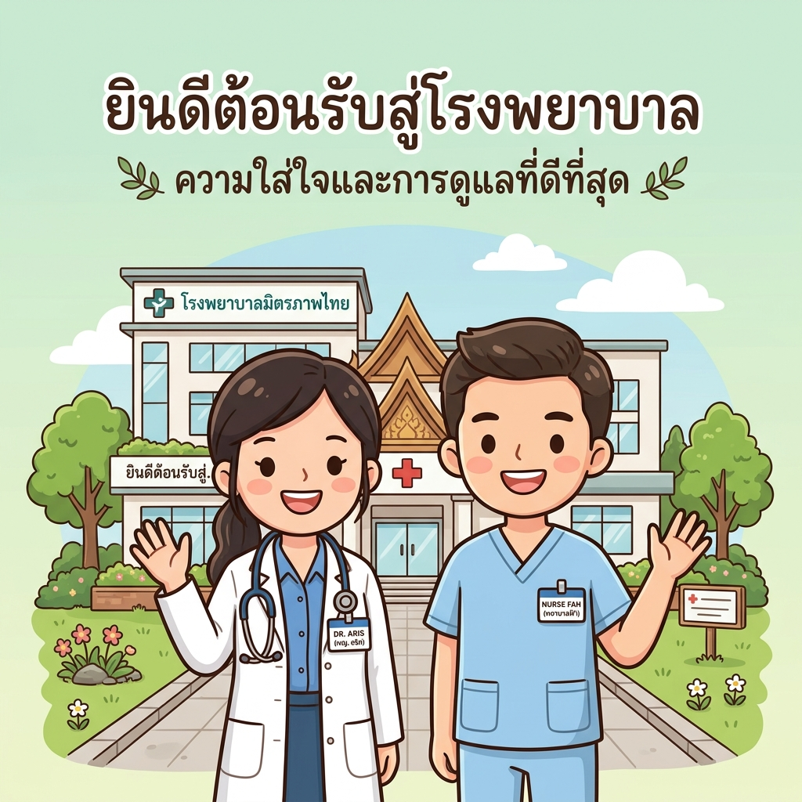
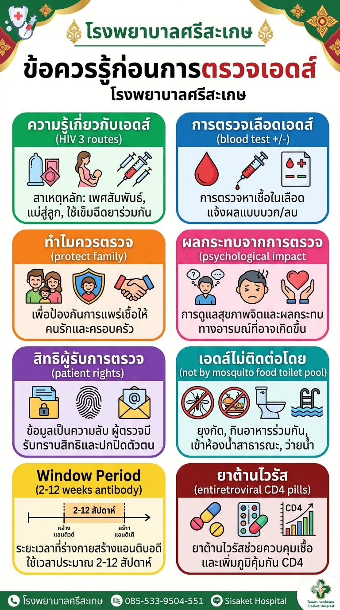

สื่อนำเสนอพร้อมเสียงบรรยาย เพื่อให้ความรู้ความเข้าใจที่ถูกต้องก่อนเข้ารับการตรวจเลือด

ขอบคุณที่รับชมหากมีข้อสงสัยเพิ่มเติมกรุณาติดต่อเจ้าหน้าที่
ให้คนไข้เปิดแอป LINE แล้วเลือกฟังก์ชั่นสแกน QR Code ได้เลยครับ